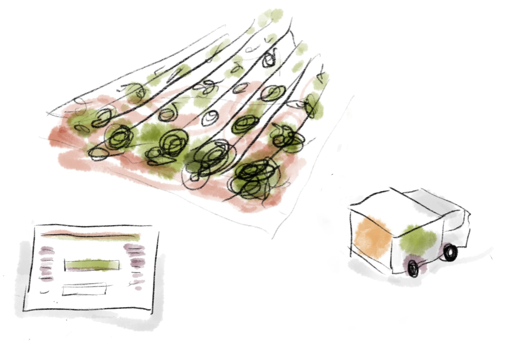

Fresa ist ein Unternehmen, dass den Liefer- und Bestellprozess von regionalen Erzeugnissen vereinfacht. Das System richtet sich an Menschen, die bereits regionale Lebensmittel beziehen, oder dies in Zukunft tun möchten. Fresa integriert sich in den Alltag der Menschen und versorgt diese mit Informationen über regionalen Lebensmitteln. Bestellungen werden in personalisierten Boxen an die Fresa Speisekammern geliefert. Hierbei beträgt die Entfehrnung vom Wohnort des Kunden zu der nächstmöglichen Speisekammer maximal fünf Gehminuten.
Fresa ♥ Regional
Im Vergleich zu Bio wird Regionalität in der Zukunft immer wichtiger. Der Begriff Regionalität gewinnt immer mehr an Aufmerksamkeit. Die Regale unserer Supermärkte geben häufi ger Platz für Produkte, die mit der Aufschrift „regional" werben. Wie steht der Verbraucher heutzutage zur Regionalität? Die Händler haben den Trend schon lange entdeckt und hoff en durch regional erzeugten Produkte mehr Kunden an ihre Märkte zu binden und den Kauf in gewisser Weise zu emotionalisieren.
Woraus besteht Fresa?
Fresa
Regionale Waren holt Fresa direkt beim Erzeuger ab und liefert sie in das stadtnah gelegene Zwischenlager. Der Nutzerkann die Produkte von Fresa entweder selbst abholen oder sich in der Fresa Clipbox liefern lassen.
Fresa Zwischenlager
Das Fresa Zwischenlager hat drei Funktionen: klassischer Lagerraum mit Kühlung, marktähnlicher Verkauf mit Probiermöglichkeit und offene Küche mit Sitzbereich. Der klassische Lagerraum dient zur Kommissionierung der Abokisten, enthält eine kleine Packstraße, und bietet den Erzeugern die Möglichkeit Waren einfach direkt zur Vermarktung weitergeben zu können.
Fresa Chip
Damit jeder Kunde Zugang zu den Speisekammern hat, bekommt man einen Fresa Chip. Dieser ist mit einem RFID Transmitter ausgestattet, der die Kundennummer an die Speisekammer überträgt.
Was wollen wir erreichen?
Erzeugernahes Vermarktungsprinzip
Fresa vermarktet die Produkte der Erzeuger, erwirtschaftet aber deutlich weniger Gewinn beim Einkauf der Waren als ein marktüblicher Händler, wie es zum Beispiel bei einem Verkauf an einen Großhändler oder eine Handelskette gegeben wäre. Fresa und die Erzeuger sind zwar unterschiedliche Firmen, Fresa unterstützt durch seine kleinen Gewinnmargen beim Wareneinkauf aber den Erzeuger.
Krummes Gemüse ist auch schön
Fresa agiert erzeugernah: im Geschäftsmodell von Fresa ist ein neuer Absatzmarkt für krumm gewachsene Produkte, wie es etwa beim Anbau von Möhren, Gurken, Kohl, Zucchini oder Spargel oft vorkommt, einkalkuliert. Um den Nutzern die Waren verständlich zu machen, werden sie als Solidarprodukte in Kombination mit der Unterstützung eines gemeinnützigen Projekts verkauft.
Was gibt es in der Region?
Das Zwischenlager gibt den Nutzern die Möglichkeit, die Waren und das regionale Konzept erfühlbar zu machen. Im Marktbereich des Zwischenlagers werden die Waren nach der Entfernung ihres Produktionsortes sortiert zum Verkauf aufgebaut, ähnlich wie bei einem Marktstand oder einer Markthalle.